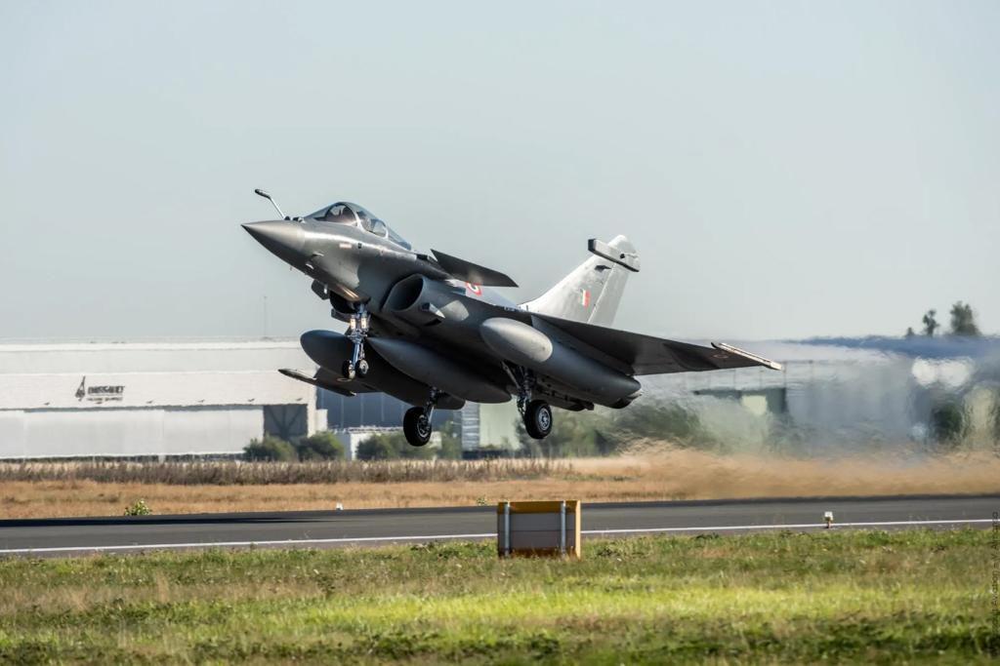

| RAFALE
The Dassault Rafale is a French twin-engine, canard delta wing, multirole fighter aircraft designed and built by Dassault Aviation. Equipped with a wide range of weapons, the Rafale is intended to perform air supremacy, interdiction, aerial reconnaissance, ground support, in-depth strike, anti-ship strike and nuclear deterrence missions. The Rafale is referred to as an "omnirole" aircraft by Dassault. In the late 1970s, the French Air Force and French Navy were seeking to replace and consolidate their current fleets of aircraft. In order to reduce development costs and boost prospective sales, France entered into an arrangement with UK, Germany, Italy and Spain to produce an agile multi-purpose fighter, the Eurofighter Typhoon. Subsequent disagreements over workshare and differing requirements led to France's pursuit of its own development programme. Dassault built a technology demonstrator which first flew in July 1986 as part of an eight-year flight-test programme, paving the way for the go-ahead of the project. The Rafale is distinct from other European fighters of its era in that it is almost entirely built by one country, involving most of France's major defence contractors, such as Dassault, Thales and Safran. |
 |